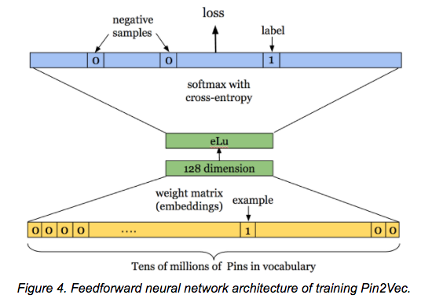

There is a powerful technique that is winning Kaggle competitions and is widely used at Google (according to Jeff Dean), Pinterest, and Instacart, yet that many people don’t even realize is possible: the use of deep learning for tabular data, and in particular, the creation of embeddings for categorical variables.
Despite what you may have heard, you can use deep learning for the type of data you might keep in a SQL database, a Pandas DataFrame, or an Excel spreadsheet (including time-series data). I will refer to this as tabular data, although it can also be known as relational data, structured data, or other terms (see my twitter poll and comments for more discussion).

Tabular data is the most commonly used type of data in industry, but deep learning on tabular data receives far less attention than deep learning for computer vision and natural language processing. This post covers some key concepts from applying neural networks to tabular data, in particular the idea of creating embeddings for categorical variables, and highlights 2 relevant modules of the fastai library:
fastai.structured: this module works with Pandas DataFrames, is not dependent on PyTorch, and can be used separately from the rest of the fastai library to process and work with tabular data.fastai.column_data: this module also works with Pandas DataFrames, and provides methods to convert DataFrames (with both continuous and categorical variables) into ModelData objects that can easily be used when training neural networks. It also includes an implementation for creating embeddings of categorical variables, a powerful technique I will explain below.
The material from this post is covered in much more detail starting around 1:59:45 in the Lesson 3 video and continuing in Lesson 4 of our free, online Practical Deep Learning for Coders course. To see example code of how this approach can be used in practice, check out our Lesson 3 jupyter notebook.
Embeddings for Categorical Variables
A key technique to making the most of deep learning for tabular data is to use embeddings for your categorical variables. This approach allows for relationships between categories to be captured. Perhaps Saturday and Sunday have similar behavior, and maybe Friday behaves like an average of a weekend and a weekday. Similarly, for zip codes, there may be patterns for zip codes that are geographically near each other, and for zip codes that are of similar socio-economic status.
Taking Inspiration from Word Embeddings
A way to capture these multi-dimensional relationships between categories is to use embeddings. This is the same idea as is used with word embeddings, such as Word2Vec. For instance, a 3-dimensional version of a word embedding might look like:
| puppy | [0.9, 1.0, 0.0] |
| dog | [1.0, 0.2, 0.0] |
| kitten | [0.0, 1.0, 0.9] |
| cat | [0.0, 0.2, 1.0] |
Notice that the first dimension is capturing something related to being a dog, and the second dimension captures youthfulness. This example was made up by hand, but in practice you would use machine learning to find the best representations (while semantic values such as dogginess and youth would be captured, they might not line up with a single dimension so cleanly). You can check out my workshop on word embeddings for more details about how word embeddings work.

Applying Embeddings for Categorical Variables
Similarly, when working with categorical variables, we will represent each category by a vector of floating point numbers (the values of this representation are learned as the network is trained).
For instance, a 4-dimensional version of an embedding for day of week could look like:
| Sunday | [.8, .2, .1, .1] |
| Monday | [.1, .2, .9, .9] |
| Tuesday | [.2, .1, .9, .8] |
Here, Monday and Tuesday are fairly similar, yet they are both quite different from Sunday. Again, this is a toy example. In practice, our neural network would learn the best representations for each category while it is training, and each dimension (or direction, which doesn’t necessarily line up with ordinal dimensions) could have multiple meanings. Rich relationships can be captured in these distributed representations.
Reusing Pretrained Categorical Embeddings
Embeddings capture richer relationships and complexities than the raw categories. Once you have learned embeddings for a category which you commonly use in your business (e.g. product, store id, or zip code), you can use these pre-trained embeddings for other models. For instance, Pinterest has created 128-dimensional embeddings for its pins in a library called Pin2Vec, and Instacart has embeddings for its grocery items, stores, and customers.

The fastai library contains an implementation for categorical variables, which work with Pytorch’s nn.Embedding module, so this is not something you need to code from hand each time you want to use it.
Treating some Continuous Variables as Categorical
We generally recommend treating month, year, day of week, and some other variables as categorical, even though they could be treated as continuous. Often for variables with a relatively small number of categories, this results in better performance. This is a modeling decision that the data scientist makes. Generally, we want to keep continuous variables represented by floating point numbers as continuous.
Although we can choose to treat continuous variables as categorical, the reverse is not true: any variables that are categorical must be treated as categorical.
Time Series Data
The approach of using neural networks together with categorical embeddings can be applied to time series data as well. In fact, this was the model used by students of Yoshua Bengio to win 1st place in the Kaggle Taxi competition(paper here), using a trajectory of GPS points and timestamps to predict the length of a taxi ride. It was also used by the 3rd place winners in the Kaggle Rossmann Competition, which involved using time series data from a chain of stores to predict future sales. The 1st and 2nd place winners of this competition used complicated ensembles that relied on specialist knowledge, while the 3rd place entry was a single model with no domain-specific feature engineering.
In our Lesson 3 jupyter notebook we walk through a solution for the Kaggle Rossmann Competition. This data set (like many data sets) includes both categorical data (such as the state the store is located in, or being one of 3 different store types) and continuous data (such as the distance to the nearest competitor or the temperature of the local weather). The fastai library lets you enter both categorical and continuous variables as input to a neural network.
When applying machine learning to time-series data, you nearly always want to choose a validation set that is a continuous selection with the latest available dates that you have data for. As I wrote in a previous post, “If your data is a time series, choosing a random subset of the data will be both too easy (you can look at the data both before and after the dates your are trying to predict) and not representative of most business use cases (where you are using historical data to build a model for use in the future).”
One key to successfully using deep learning with time series data is to split the date into multiple categorical variables (year, month, week, day of week, day of month, and Booleans for whether it’s the start/end of a month/quarter/year). The fastai library has implemented a method to handle this for you, as described below.
Modules to Know in the Fastai Library
We will be releasing more documentation for the fastai library in coming months, but it is already available on pip and on github, and it is used in the Practical Deep Learning for Coders course. The fastai library is built on top of Pytorch and encodes best practices and helpful high-level abstractions for using neural networks. The fastai library achieves state-of-the-art results and was recently used to win the Stanford DAWNBench competition (fastest CIFAR10 training).
fastai.column_data
fastai.column_data.ColumnarModelData takes a Pandas DataFrame as input and creates a type of ModelData object (an object which contains data loaders for the training, validation, and test sets, and which is the fundamental way of keeping track of your data while training models).
fastai.structured
The fastai.structured module of the fastai library is built on top of Pandas, and includes methods to transform DataFrames in a number of ways, improving the performance of machine learning models by pre-processing the data appropriately and creating the right types of variables.
For instance, fastai.structured.add_datepart converts dates (e.g. 2000-03-11) into a number of variables (year, month, week, day of week, day of month, and booleans for whether it’s the start/end of a month/quarter/year.)
Other useful methods in the module allow you to:
- Fill in missing values with the median whilst adding a boolean indicator variable (
fix_missing) - Change any columns of strings in a Pandas DataFrame to a column of categorical values (
train_cats)